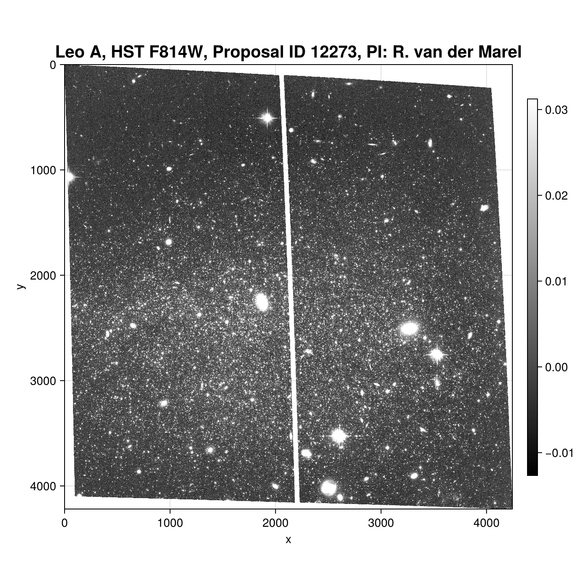
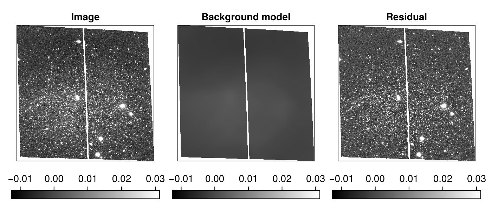
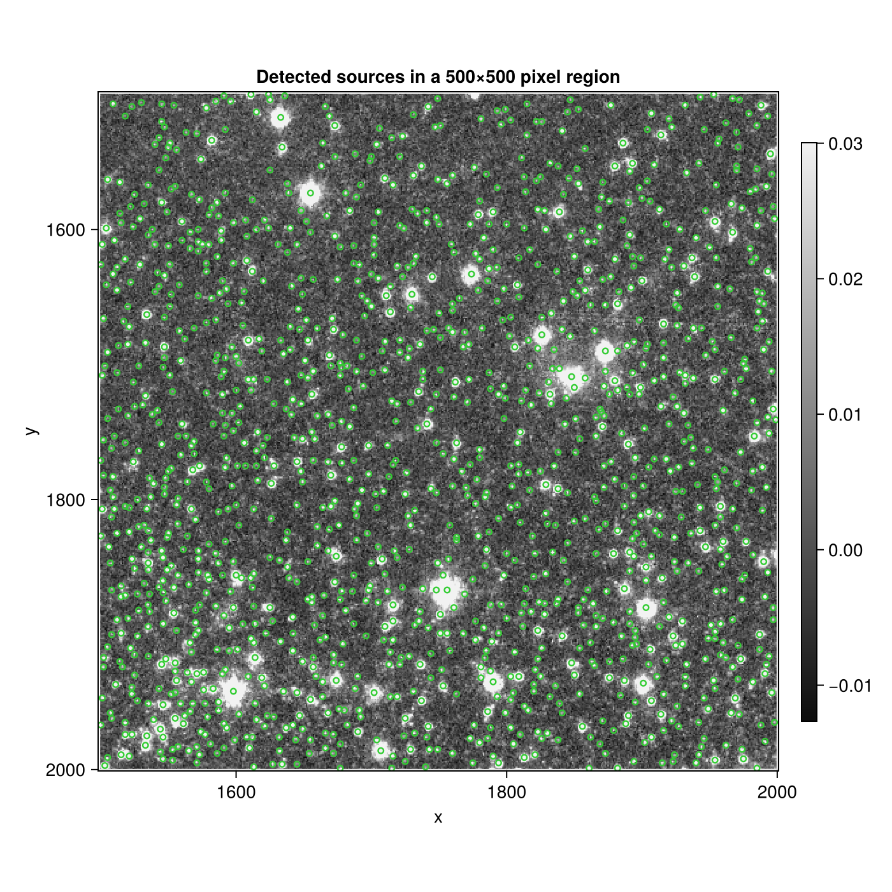
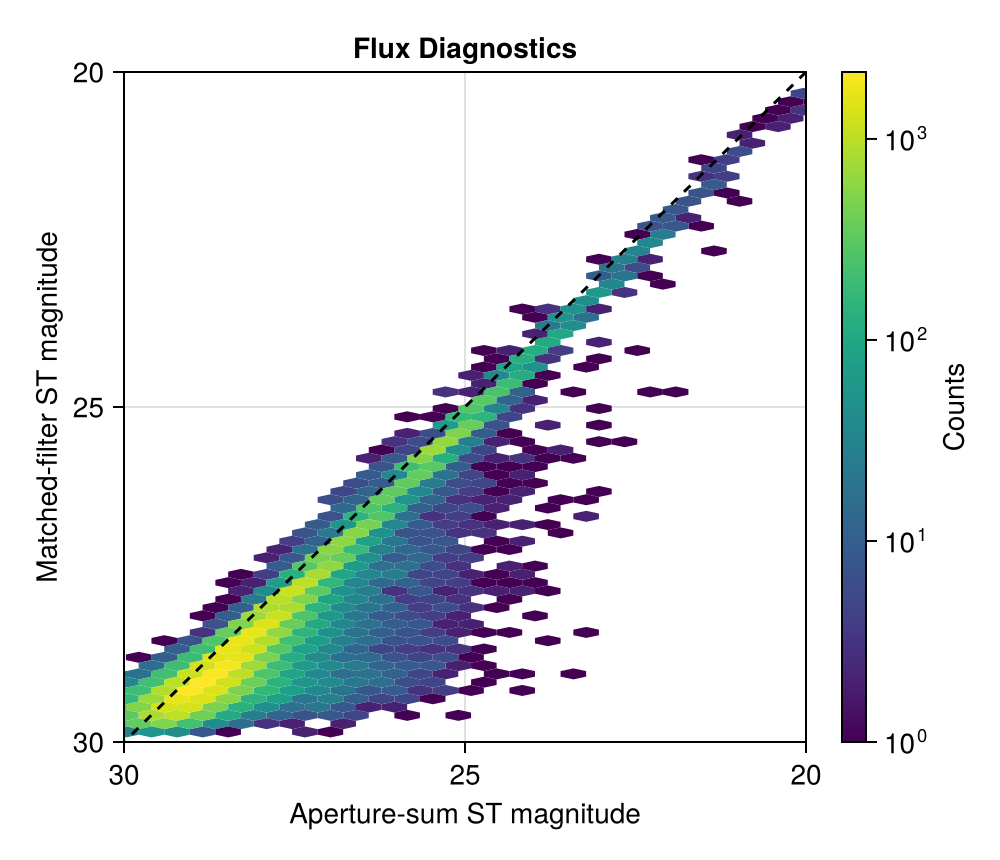
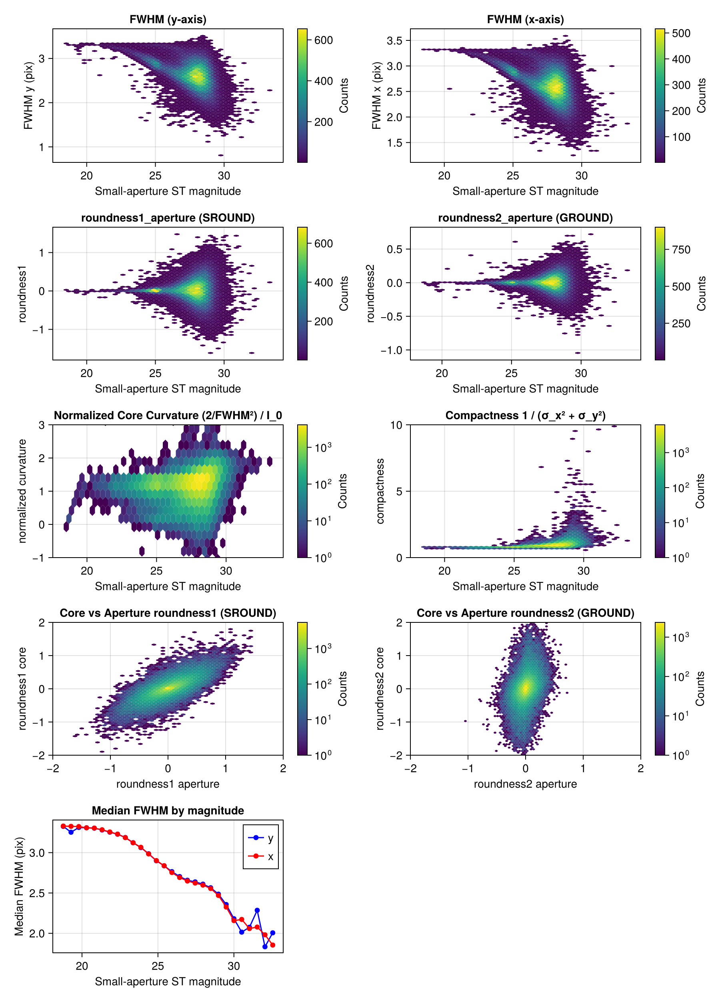
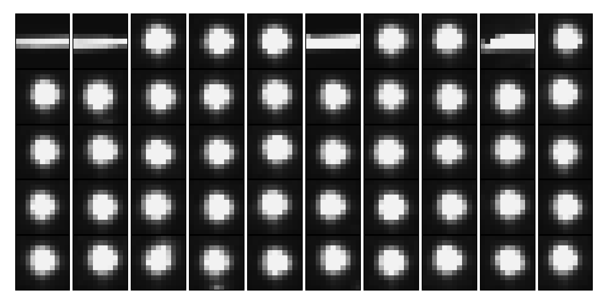
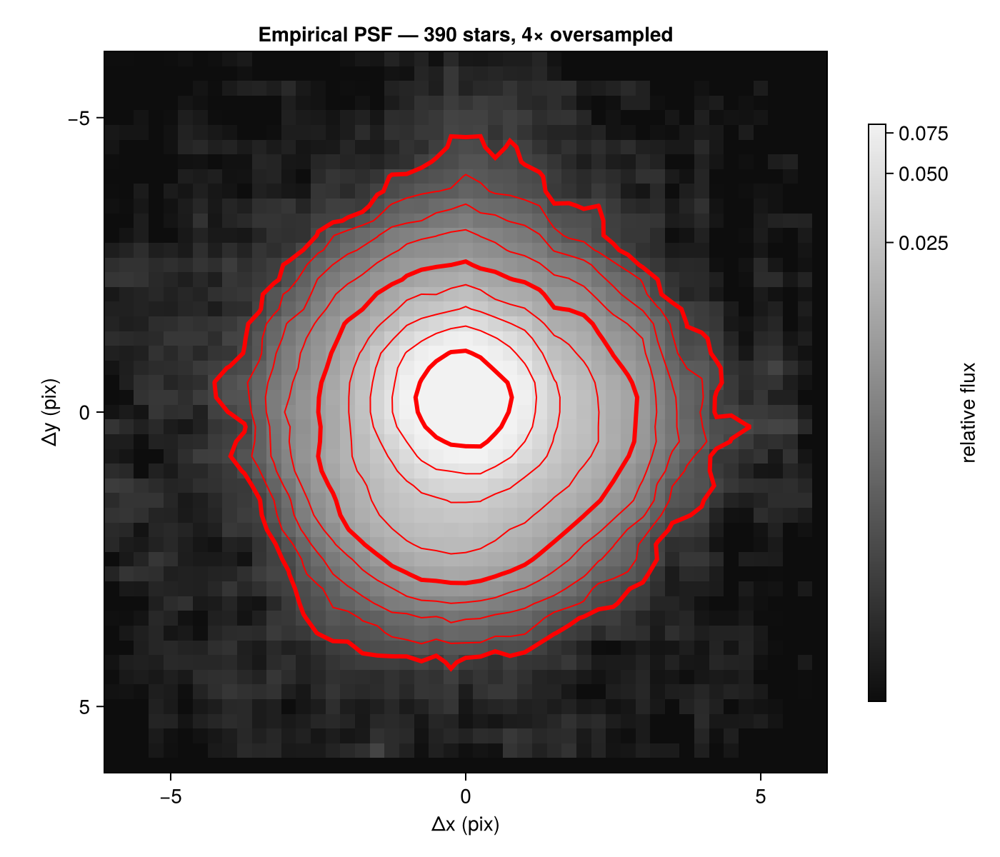
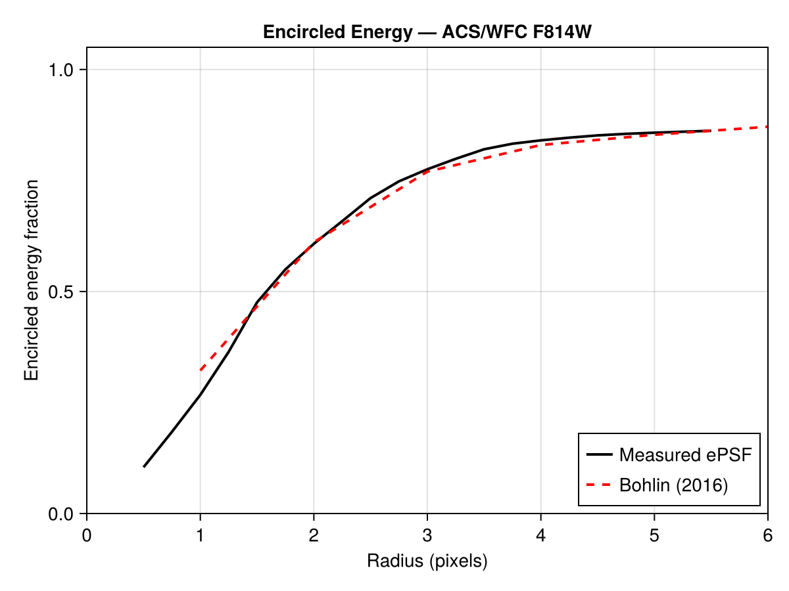
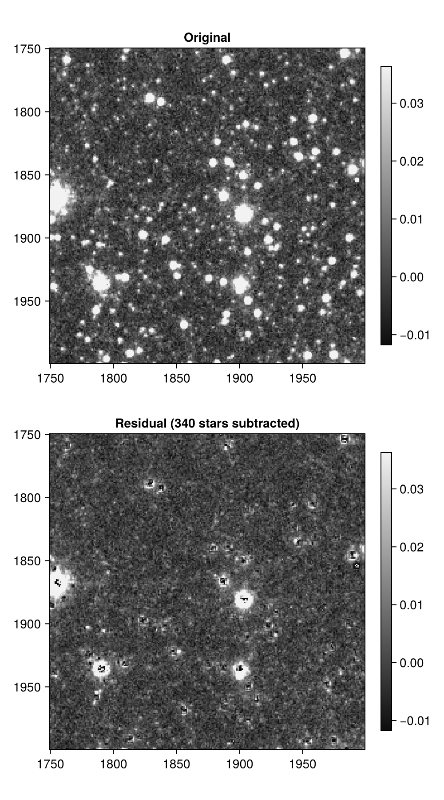
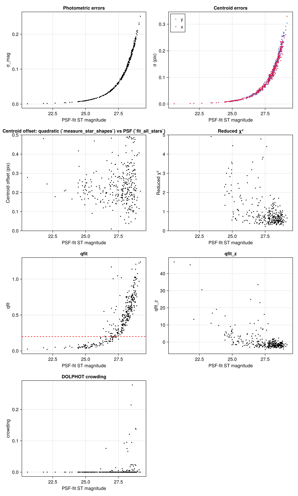

HST DRC
Here we will run photometry on an HST/ACS DRC file which is a high-level data product that has been calibrated, geometrically-corrected, and dither-combined by AstroDrizzle.
using CrowdPhot
using FITSIO
using LazyArtifacts
using CairoMakie
using Makie: LuptonAsinhScale
using PlotUtils: zscale
using Pkg
# Load image from artifact system
artifacts_toml = joinpath(pkgdir(CrowdPhot), "docs", "Artifacts.toml")
artifact_dir = Pkg.Artifacts.ensure_artifact_installed("jbjl03010_drc", artifacts_toml)
fits_path = joinpath(artifact_dir, "jbjl03010_drc.fits")
# Load relevant parts from FITS file
hdr, sci_hdr, img, weights = FITS(fits_path) do fits
read_header(fits[1]), read_header(fits[2]), read(fits[2]), read(fits[3])
end
# Plot image
fig = Figure(size=(700,700),)
ax = Axis(fig[1,1]; aspect = DataAspect(),
xlabel = "x", ylabel = "y",
title="Leo A, HST F814W, Proposal ID 12273, PI: R. van der Marel",
titlesize = 20, yreversed = true)
colorrange = zscale(img) # Use PlotUtils.zscale for reasonable color limits
hm = image!(ax, img'; colorrange, colorscale=LuptonAsinhScale())
Colorbar(fig[1,2], hm; height = Relative(0.75), valign = :center)
fig
Background Estimation
DRZ files have already been background-subtracted, but we will will still run background estimation to get the noise (RMS) map.
# `img` is NaN in areas not covered, allowing us to make a coverage mask
coverage_mask = isnan.(img)
# Estimate 2-D background with 256 pixel mesh size
bkg = Background2D(img, 256; coverage_mask, fill_value=NaN)
img_sub = img .- bkg.background
fig = Figure(size = (700, 300))
ax1 = Axis(fig[1, 1]; title = "Image", aspect = DataAspect(), yreversed = true)
ax2 = Axis(fig[1, 2]; title = "Background model", aspect = DataAspect(), yreversed = true)
ax3 = Axis(fig[1, 3]; title = "Residual", aspect = DataAspect(), yreversed = true)
im1 = image!(ax1, img'; colorrange)
im2 = image!(ax2, bkg.background'; colorrange)
im3 = image!(ax3, img_sub'; colorrange)
# Colorbar(fig[2, 3], hm; vertical = false)
for (i, im) in enumerate((im1, im2, im3))
Colorbar(fig[2, i], im; vertical = false)
end
for ax in (ax1, ax2, ax3)
hidedecorations!(ax)
end
fig
Source Detection
We detect point sources with matched_filter using a circular Gaussian kernel with FWHM = 2.0 pixels, the approximate width of the ACS/WFC PSF at F814W. For detection we use inverse-variance weights derived from the background RMS only; including source Poisson noise would make bright sources harder to detect by inflating their own noise estimate, which is incorrect for the detection null hypothesis.
# Convert to Float64 for consistency with the PSF kernel
img_sub_f64 = Float64.(img_sub)
# Inverse variance from background-only error; clip NaN regions to zero weight.
inv_var_bkg = fill(0.0, size(img_sub_f64))
valid = @. !isnan(bkg.background_rms) & (bkg.background_rms > 0)
@. inv_var_bkg[valid] = 1 / bkg.background_rms[valid]^2
# PSF FWHM for HST/ACS F814W (~2 pix)
psf_fwhm = 2.0
mf = matched_filter(img_sub_f64, psf_fwhm; inv_var = inv_var_bkg, sigma = 5.0)
println("Detected $(length(mf.peaks)) sources at ≥ 5σ")Detected 74536 sources at ≥ 5σAnd now we can plot our detections on a small part of the image:
region_width = 500
ny, nx = size(img_sub)
y_start = 1500
x_start = 1500
y_range = y_start:min(ny, y_start + region_width - 1)
x_range = x_start:min(nx, x_start + region_width - 1)
region_img = img_sub[y_range, x_range]
region_colorrange = zscale(region_img[isfinite.(region_img)])
# CrowdPhot coordinates are image[y, x]; Makie overlays take (x, y).
region_peaks = filter(mf.peaks) do peak
y, x = Tuple(peak)
y in y_range && x in x_range
end
# Draw 4-pixel-diameter source circles in image-coordinate units.
source_circles = map(region_peaks) do peak
y, x = Tuple(peak)
Circle(Point2f(x, y), 2)
end
fig = Figure(size = (700, 700))
ax = Axis(fig[1, 1];
aspect = DataAspect(), yreversed = true,
xlabel = "x", ylabel = "y",
title = "Detected sources in a 500×500 pixel region")
hm = heatmap!(ax, x_range, y_range, region_img';
colorrange = region_colorrange, colorscale = LuptonAsinhScale(),
colormap = :grays, interpolate = false)
poly!(ax, source_circles; color = (:limegreen, 0), strokecolor = :limegreen,
strokewidth = 1.2)
Colorbar(fig[1, 2], hm; height = Relative(0.75), valign = :center)
fig
Morphological Measurements
For morphological measurements the inverse-variance weights should include all error sources, not just the background. The Poisson noise of a source contributes to the uncertainty in its own pixels and must be included for correct centroid and shape estimation. We use calc_total_error to combine the background RMS with the source Poisson term. The data are in $\mathrm{e}^- / \mathrm{s}$ ($\mathtt{BUNIT} = \mathrm{ELECTRONS}/\mathrm{S}$), so the effective gain is the exposure time, $g_{\mathrm{eff}} = \mathtt{EXPTIME}$, which converts to countable units (electrons).
# Extract exposure time from the primary header for the effective gain.
exptime = hdr["EXPTIME"]
# Compute total 1-sigma error including source Poisson noise.
total_err = calc_total_error.(img_sub_f64, bkg.background_rms, exptime)
# Build inverse-variance map with NaN regions clipped to zero weight.
inv_var = fill(0.0, size(img_sub_f64))
valid_total = @. isfinite(total_err) & (total_err > 0)
@. inv_var[valid_total] = 1 / total_err[valid_total]^2
# Use the same MatchedFilterResult but with corrected inv_var for morphology.
using ConstructionBase
mf_morph = ConstructionBase.setproperties(mf, (inv_var = inv_var,))MatchedFilterResult{Float64}([NaN NaN … NaN NaN; NaN NaN … NaN NaN; … ; NaN NaN … -0.0027091181837022305 -0.002892973367124796; NaN NaN … -0.008012089878320694 -0.008009747602045536], [0.0 0.0 … 0.0 0.0; 0.0 0.0 … 0.0 0.0; … ; 0.0 0.0 … 69293.6015625 69308.3515625; 0.0 0.0 … 69292.0078125 69306.78125], [NaN NaN … NaN NaN; NaN NaN … NaN NaN; … ; NaN NaN … -0.02714545642076403 -0.01886362360590568; NaN NaN … -0.04959343093656446 -0.04408920175692456], [28793.45708210602 33774.78381630012 … 0.0 0.0; 33775.76221834944 60761.247265371036 … 0.0 0.0; … ; 0.0 0.0 … 764936.4910989312 765067.9400883345; 0.0 0.0 … 764922.3674867246 765053.940322508], [10.493275602185369 12.246505682084562 … 0.0 0.0; 10.146202641634808 7.835715368470732 … 0.0 0.0; … ; 0.0 0.0 … -2.149395134023108 -1.4940490496620187; 0.0 0.0 … -3.928075511394376 -3.4927168055858777], [-0.09123337375646669 -0.09123337374438255 … -0.09123337374438255 -0.09123337375646669; -0.09123337374438255 -0.09123336985128394 … -0.09123336985128394 -0.09123337374438255; … ; -0.09123337374438255 -0.09123336985128394 … -0.09123336985128394 -0.09123337374438255; -0.09123337375646669 -0.09123337374438255 … -0.09123337374438255 -0.09123337375646669], 0.3009750167140157, CartesianIndex{2}[CartesianIndex(30, 2), CartesianIndex(225, 2), CartesianIndex(227, 2), CartesianIndex(13, 3), CartesianIndex(22, 4), CartesianIndex(68, 4), CartesianIndex(119, 5), CartesianIndex(129, 5), CartesianIndex(173, 5), CartesianIndex(339, 5) … CartesianIndex(4086, 4240), CartesianIndex(4074, 4241), CartesianIndex(4146, 4241), CartesianIndex(4018, 4242), CartesianIndex(4024, 4242), CartesianIndex(4027, 4242), CartesianIndex(4108, 4242), CartesianIndex(4130, 4242), CartesianIndex(4142, 4244), CartesianIndex(4167, 4244)], [7.378157063062535, 5.347283042795163, 5.45908365552463, 5.4464080494249325, 7.74438660893634, 6.536622442397136, 7.1555674777322995, 5.007264927354376, 178.8861251350942, 5.406756963690699 … 6.624315266603846, 11.798672891393087, 6.125521268650482, 5.430458303065108, 9.478584416831925, 7.885594765862184, 9.316597948657613, 5.902346654312643, 10.555482933815007, 75.18767918239429], [0.08706501372811376, 0.690836100969903, 0.7052623931281433, 0.06428049996563594, 0.09139509831186794, 0.07809459077312211, 0.08566479161342079, 0.05993568645188643, 3.825236069400814, 0.6976291170596753 … 0.08488870136027112, 0.33517760794236806, 0.07825329692146704, 0.5203333785426468, 0.8138872077346401, 0.6443488749143849, 0.13098358099686294, 0.08283812926573082, 0.3020412577801629, 1.0567611639964805])We feed the matched-filter result to measure_star_shapes, which extracts a cutout around each peak, computes sub-pixel centroids via centroid_poly, and measures aperture-based FWHM, roundness, moment normalization, and rectangular aperture-sum diagnostics via measure_star_shape.
Moment-based statistics can be biased if the cutout includes many background-dominated pixels. Here we use a half_width=2 so the full width of the cutout is 5 pixels, just over twice the FWHM of the kernel we used for detection, which gives good results.
# Measure morphology for all detected sources
results = measure_star_shapes(mf_morph; half_width = 2)
keys(results[1])(:peak_index, :pixel, :significance, :matched_filter_flux, :core, :centroid, :morphology)Flux Diagnostics
At this point in processing we have two quick flux diagnostics. The matched_filter_flux is the amplitude of the PSF template at the detected peak; it is intended to estimate the source flux when the source matches the detection kernel and the local background is handled by the zero-sum filter. It is not a full PSF fit, so blends, PSF mismatch, and structured backgrounds can bias it.
The morphology.aperture_sum is the unweighted sum of image - background over the small rectangular cutout used for shape measurement. It is useful because it is simple and tied to exactly the pixels used for the morphology, but it is not a robust circular aperture measurement. We have not performed any aperture correction here; it is calculated below after we construct a PSF model.
# Compute instrumental magnitudes from the rectangular count-rate aperture sum,
# excluding stars with negative aperture sums.
inst_mag = [
r.morphology.aperture_sum > 0 ?
-2.5 * log10(r.morphology.aperture_sum) :
NaN
for r in results
]
# Compute instrumental magnitudes from the matched-filter flux estimate.
mf_inst_mag = [
r.matched_filter_flux > 0 ?
-2.5 * log10(r.matched_filter_flux) :
NaN
for r in results
]
# Filter to sources with valid measurements
good = findall(eachindex(results)) do i
r = results[i]
r.morphology.fwhm.y > 0 &&
r.morphology.fwhm.x > 0 &&
isfinite(r.core.compactness_core) &&
isfinite(r.core.normalized_curvature) &&
r.morphology.moment_norm > 0 &&
isfinite(inst_mag[i]) &&
isfinite(mf_inst_mag[i])
end
println("$(length(good)) / $(length(results)) sources have valid morphological measurements")
# Compare ST magnitudes from the two quick flux estimates.
stmag_zeropoint = -2.5 * log10(sci_hdr["PHOTFLAM"]) + sci_hdr["PHOTZPT"]
aperture_mags = inst_mag[good] .+ stmag_zeropoint
matched_filter_mags = mf_inst_mag[good] .+ stmag_zeropoint
fig = Figure(size = (500, 430))
ax = Axis(fig[1, 1];
xlabel = "Aperture-sum ST magnitude",
ylabel = "Matched-filter ST magnitude",
title = "Flux Diagnostics")
h = hexbin!(ax, aperture_mags, matched_filter_mags; bins = 80, colorscale = log10)
# lo = minimum((minimum(aperture_mags), minimum(matched_filter_mags)))
# hi = maximum((maximum(aperture_mags), maximum(matched_filter_mags)))
lo, hi = 20, 30
lines!(ax, [lo, hi], [lo, hi]; color = :black, linestyle = :dash)
xlims!(ax, hi, lo)
ylims!(ax, hi, lo)
Colorbar(fig[1, 2], h; label = "Counts")
fig
Morphology Diagnostics
The panels below show how morphological measurements trend with small-aperture ST magnitude. We use the aperture magnitudes here as we used a simple Gaussian for our matched-filter detection pass, so the flux estimates based on that metric are likely to be biased. A quick-look estimate from the encircled energy curves suggests these cutout aperture magnitudes need a correction of roughly $-0.4$ mag, making them brighter, which we apply below. This is not a robust aperture correction, we will discuss how to measure true calibrated magnitudes later.
using Statistics
# Reuse the aperture-sum ST magnitudes from the flux diagnostics above,
# applying *APPROXIMATE* 0.4 mag aperture correction
mags = aperture_mags .- 0.4
# Unpack data from `results`, which has array-of-structs layout
fwhm_y = [results[i].morphology.fwhm.y for i in good]
fwhm_x = [results[i].morphology.fwhm.x for i in good]
fwhm_theta = [results[i].morphology.fwhm.theta for i in good]
round1 = [results[i].morphology.roundness1_aperture for i in good]
round2 = [results[i].morphology.roundness2_aperture for i in good]
round1_core = [results[i].core.roundness1_core for i in good]
round2_core = [results[i].core.roundness2_core for i in good]
compactness = [results[i].core.compactness_core for i in good]
normalized_curvature = [results[i].core.normalized_curvature for i in good]
sig = [results[i].significance for i in good]
mf_flux = [results[i].matched_filter_flux for i in good]
fig = Figure(size = (900, 1250))
# Panel 1: FWHM y vs magnitude
ax1 = Axis(fig[1, 1]; xlabel = "Small-aperture ST magnitude",
ylabel = "FWHM y (pix)", title = "FWHM (y-axis)")
h1 = hexbin!(ax1, mags, fwhm_y; bins = 80)
Colorbar(fig[1, 2], h1; label = "Counts")
# Panel 2: FWHM x vs magnitude
ax2 = Axis(fig[1, 3]; xlabel = "Small-aperture ST magnitude",
ylabel = "FWHM x (pix)", title = "FWHM (x-axis)")
h2 = hexbin!(ax2, mags, fwhm_x; bins = 80)
Colorbar(fig[1, 4], h2; label = "Counts")
# Panel 3: roundness1 (SROUND) vs magnitude
ax3 = Axis(fig[2, 1]; xlabel = "Small-aperture ST magnitude",
ylabel = "roundness1", title = "roundness1_aperture (SROUND)")
h3 = hexbin!(ax3, mags, round1; bins = 80)
Colorbar(fig[2, 2], h3; label = "Counts")
# Panel 4: roundness2 (GROUND) vs magnitude
ax4 = Axis(fig[2, 3]; xlabel = "Small-aperture ST magnitude",
ylabel = "roundness2", title = "roundness2_aperture (GROUND)")
h4 = hexbin!(ax4, mags, round2; bins = 80)
Colorbar(fig[2, 4], h4; label = "Counts")
# Panel 5: normalized curvature vs magnitude
ax5 = Axis(fig[3, 1]; xlabel = "Small-aperture ST magnitude",
ylabel = "normalized curvature", title = "Normalized Core Curvature (2/FWHM²) / I_0")
ylims!(ax5, -1, 3)
idxs = findall(x -> -10 < x < 10, normalized_curvature)
h5 = hexbin!(ax5, mags[idxs], normalized_curvature[idxs]; bins = 80, colorscale=log10)
Colorbar(fig[3, 2], h5; label = "Counts")
# Panel 6: compactness vs magnitude
ax6 = Axis(fig[3, 3]; xlabel = "Small-aperture ST magnitude",
ylabel = "compactness", title = "Compactness 1 / (σ_x² + σ_y²)")
ylims!(ax6, 0, 10)
idxs = findall(x -> 0 < x < 10, compactness)
h6 = hexbin!(ax6, mags[idxs], compactness[idxs]; bins = 80, colorscale=log10)
Colorbar(fig[3, 4], h6; label = "Counts")
# Panel 7: Core SROUND vs Aperture SROUND
ax7 = Axis(fig[4, 1]; xlabel = "roundness1 aperture",
ylabel = "roundness1 core", title = "Core vs Aperture roundness1 (SROUND)",
limits = ((-2, 2), (-2, 2)))
h7 = hexbin!(ax7, round1, round1_core; bins = 80, colorscale=log10)
Colorbar(fig[4, 2], h7; label = "Counts")
# Panel 8: Core GROUND vs Aperture GROUND
ax8 = Axis(fig[4, 3]; xlabel = "roundness2 aperture",
ylabel = "roundness2 core", title = "Core vs Aperture roundness2 (GROUND)",
limits = ((-2, 2), (-2, 2)))
h8 = hexbin!(ax8, round2, round2_core; bins = 80, colorscale=log10)
Colorbar(fig[4, 4], h8; label = "Counts")
# Panel 9: median FWHM per magnitude bin
mag_bins = range(minimum(mags), maximum(mags); length = 30)
med_fwhm_y = Float64[]
med_fwhm_x = Float64[]
mag_centers = Float64[]
for (lo, hi) in zip(mag_bins[1:end-1], mag_bins[2:end])
bin_idx = findall(m -> lo <= m < hi, mags)
isempty(bin_idx) && continue
push!(mag_centers, (lo + hi) / 2)
push!(med_fwhm_y, median(fwhm_y[bin_idx]))
push!(med_fwhm_x, median(fwhm_x[bin_idx]))
end
ax9 = Axis(fig[5, 1]; xlabel = "Small-aperture ST magnitude",
ylabel = "Median FWHM (pix)", title = "Median FWHM by magnitude")
scatterlines!(ax9, mag_centers, med_fwhm_y; label = "y", color = :blue)
scatterlines!(ax9, mag_centers, med_fwhm_x; label = "x", color = :red)
axislegend(ax9; position = :rt)
fig
Pick Stars for PSF Fitting
We select stars suitable for PSF fitting with pick_psf_stars. The function clips the instrumental-magnitude distribution to exclude very bright (potentially saturated) and very faint stars, applies a hard constraint on normalized core curvature, and then sigma-clips morphological parameters (fwhm.y, fwhm.x, roundness1_aperture, roundness2_aperture, normalized_curvature) within five instrumental-magnitude bins.
# Select the brightest 50 stars suitable for PSF fitting
show_idx = CrowdPhot.PSF.pick_psf_stars(results, 50)
println("$(length(show_idx)) stars selected for PSF fitting (from $(length(results)) total)")50 stars selected for PSF fitting (from 74536 total)We show image cutouts of the selected stars to visually confirm that the selection is reasonable. Note that the ePSF fitting routine includes mechanisms for rejecting provided PSF stars that do not help to improve the fit, so it is not as important to pre-filter the list of PSF stars as carefully as for other software.
# Extract cutouts with a 5-pixel half-width (11×11 pixels) for context
half = 5
ny, nx = size(img_sub)
cutouts = map(show_idx) do i
y, x = Tuple(results[i].pixel)
yr = max(1, y - half):min(ny, y + half)
xr = max(1, x - half):min(nx, x + half)
img_sub[yr, xr]
end
# Compact grid — no axis labels, colorbars, or other decorations
ncols = 10
nrows = cld(length(show_idx), ncols)
fig = Figure(size = (ncols * 70, nrows * 70))
for (k, cutout) in enumerate(cutouts)
# Per-cutout zscale for robust contrast
fin = cutout[isfinite.(cutout)]
zmin, zmax = isempty(fin) ? (0.0, 1.0) : zscale(fin)
row = (k - 1) ÷ ncols + 1
col = (k - 1) % ncols + 1
ax = Axis(fig[row, col]; aspect = DataAspect())
heatmap!(ax, cutout';
colorrange = (zmin, zmax), colormap = :grays, interpolate = false)
hidedecorations!(ax)
end
colgap!(fig.layout, 1)
rowgap!(fig.layout, 1)
fig
Empirical PSF Construction
We now build an empirical PSF from the selected stars using fit_psf with the Anderson & King (2000) iterative residual-stacking method (Anderson and King [1]). Stars outside the cutout boundary are dropped (drop_edge=true), and the ePSF is supersampled at 4× the detector pixel scale.
# Select bright, morphologically-clean stars
n_psf = 400
psf_idx = CrowdPhot.PSF.pick_psf_stars(results, n_psf; mag_quantiles=(0.05, 0.95))
# Use sub-pixel centroids from the morphology measurements
psf_y = [results[i].centroid.y for i in psf_idx]
psf_x = [results[i].centroid.x for i in psf_idx]
# Build the empirical PSF
psf_rad = 6
psf, fit_result = CrowdPhot.PSF.fit_psf(
CrowdPhot.PSF.ImagePSF, img_sub_f64, psf_y, psf_x;
psf_rad = psf_rad,
fit_rad = 4,
oversampling = 4,
smooth = true,
recenter = true,
)
n_used = sum(fit_result.used)
println("$(n_used) / $(n_psf) stars used in $(fit_result.iterations) iterations")390 / 400 stars used in 6 iterationsThe returned ImagePSF stores the PSF on an oversampled grid. We convert the grid axes to detector-pixel offsets from the PSF center for display. Note that we use a non-linear colorscale to accentuate the PSF features outside the core. Thick contours show ePSF levels of 0.001, 0.01, and 0.1.
os_y, os_x = psf.oversampling
ny_os, nx_os = size(psf.data)
# Oversampled grid indices relative to the PSF origin, scaled to detector pixels
dy_os = (1:ny_os) .- psf.origin.y
dx_os = (1:nx_os) .- psf.origin.x
y_pix = dy_os ./ os_y
x_pix = dx_os ./ os_x
fig = Figure(size = (700, 600))
ax = Axis(fig[1, 1];
aspect = DataAspect(),
xlabel = "Δx (pix)", ylabel = "Δy (pix)",
title = "Empirical PSF — $(n_used) stars, $(os_y)× oversampled",
yreversed = true)
zmin, zmax = zscale(psf.data[psf.data .> 0]; contrast=0.05)
psf_hm = heatmap!(ax, x_pix, y_pix, psf.data';
colorrange = (zmin, zmax), colormap = :grays, interpolate = false, colorscale=LuptonAsinhScale(0.0025, 5.0))
contour!(ax, x_pix, y_pix, psf.data';
levels = logrange(1e-3,1e-1;length=3), color=:red, linewidth = 3)
contour!(ax, x_pix, y_pix, psf.data';
levels = logrange(1e-3,1e-1;length=9), color=:red, linewidth = 1)
Colorbar(fig[1, 2], psf_hm; label = "relative flux", height = Relative(0.8), valign = :center)
fig
Curve of Growth and Aperture Correction
We compute the encircled-energy curve from the empirical PSF using curve_of_growth. The radii are chosen to stay within the PSF support ($\pm 6$ detector pixels from center). We also load the reference_cog for ACS/WFC F814W from Bohlin [2] to compare our measured PSF against the standard reference.
# Radii in detector pixels, staying within the PSF cutout extent (psf_rad = 6).
radii = 0.5:0.25:5.5
# Compute and normalize the curve of growth from our empirical PSF.
cog = curve_of_growth(psf, radii)
cog_norm = normalize(cog; method = :sum)
# Load the reference encircled-energy curve for ACS/WFC F814W.
ref = reference_cog(:WFC, :F814W)
# Key encircled-energy radii from our measured PSF.
rhalf = radius_at_energy(cog_norm, 0.5)
r80 = radius_at_energy(cog_norm, 0.80)
rhalf_ref = radius_at_energy(ref, 0.5)
r80_ref = radius_at_energy(ref, 0.80)
println("Half-light radius: measured $(round(rhalf; digits=2)) pix, reference $(round(rhalf_ref; digits=2)) pix")
println("80% EE radius: measured $(round(r80; digits=2)) pix, reference $(round(r80_ref; digits=2)) pix")Half-light radius: measured 1.4 pix, reference 1.62 pix
80% EE radius: measured 2.4 pix, reference 3.5 pixThe reference curve is a time-averaged PSF model. Comparing our measured EE to the reference tells us whether the PSF in our drizzle-interpolated image is broader or sharper than the reference. We multiply our measured EE by the value of the reference EE in the last radial bin so their shapes can be more easily compared visually.
# Reference EE at last radius value
max_rad_EE = encircled_energy(reference_cog(:WFC, :F814W), last(radii))
fig = Figure(size = (600, 450))
ax = Axis(fig[1, 1];
xlabel = "Radius (pixels)", ylabel = "Encircled energy fraction",
title = "Encircled Energy — ACS/WFC F814W",
limits = ((0, 6), (0, 1.05)))
lines!(ax, cog_norm.radii, cog_norm.flux .* max_rad_EE;
linewidth = 2, color = :black, label = "Measured ePSF")
lines!(ax, ref.radii, ref.flux;
linewidth = 2, color = :red, linestyle = :dash, label = "Bohlin (2016)")
axislegend(ax; position = :rb)
fig
After renormalizing to match the reference EE curve in the last radial bin, our EE curve for our ePSF fit matches the reference well. We can now calculate the aperture correction to put our measured PSF magnitudes onto the correct infinite-aperture convention for which the HST zeropoints are defined. We evaluate the reference EE curve at psf_rad here because this is radius to which the flux of our ePSF model has been normalized.
aper_corr = 2.5 * log10(encircled_energy(reference_cog(:WFC, :F814W), psf_rad))-0.149954612480842PSF Fitting Photometry
We now run fit_all_stars on every source in a 250×250 region, using the empirical PSF we just constructed. After measuring all sources in this region and subtracting their models, the residual image should be nearly empty – only noise should remain where the sources used to be. We will fix the background to 0 since we have already subtracted a background model. We will only do one pass of photometry, since this field is not very crowded ($\sim2$ stars per square arcsecond).
# Select a 250×250 sub-region (lower-right corner of the earlier 500×500 region)
y1, y2 = 1750, min(ny, 1999)
x1, x2 = 1750, min(nx, 1999)
phot_y_range = y1:y2
phot_x_range = x1:x2
# Select all sources whose pixel positions fall within this region
region_idx = findall(eachindex(results)) do i
y, x = Tuple(results[i].pixel)
y in phot_y_range && x in phot_x_range
end
region_sources = results[region_idx]
println("$(length(region_sources)) sources in the display region")
# Run single-pass PSF-fitting photometry
phot_result = fit_all_stars(img_sub_f64, psf, region_sources, 2;
n_passes = 1, inv_var, fixed = (; bkg = 0.0))
n_good = sum(phot_result.valid)
println("$n_good / $(length(region_sources)) stars fitted successfully")340 sources in the display region
340 / 340 stars fitted successfullyThe MultiPassPhotResult stores the final residual image after all source models have been subtracted. Below we compare the original image to the residual for this 250×250 region. Where sources have been successfully subtracted, the residual shows only noise.
orig_region = img_sub[phot_y_range, phot_x_range]
resid_region = phot_result.residual[phot_y_range, phot_x_range]
region_colorrange = zscale(orig_region[isfinite.(orig_region)])
# Recompute detection circles for this sub-region
phot_circles = map(filter(mf.peaks) do peak
y, x = Tuple(peak)
y in phot_y_range && x in phot_x_range
end) do peak
y, x = Tuple(peak)
Circle(Point2f(x, y), 2)
end
fig = Figure(size = (500, 900))
ax1 = Axis(fig[1, 1];
aspect = DataAspect(), yreversed = true,
title = "Original")
ax2 = Axis(fig[2, 1];
aspect = DataAspect(), yreversed = true,
title = "Residual ($n_good stars subtracted)")
hm1 = heatmap!(ax1, phot_x_range, phot_y_range, orig_region';
colorrange = region_colorrange, colorscale = LuptonAsinhScale(),
colormap = :grays, interpolate = false)
hm2 = heatmap!(ax2, phot_x_range, phot_y_range, resid_region';
colorrange = region_colorrange, colorscale = LuptonAsinhScale(),
colormap = :grays, interpolate = false)
# Overlay detection circles on both panels
# poly!(ax1, phot_circles; color = (:limegreen, 0), strokecolor = :limegreen,
# strokewidth = 1.2)
# poly!(ax2, phot_circles; color = (:limegreen, 0), strokecolor = :limegreen,
# strokewidth = 1.2)
Colorbar(fig[1, 2], hm1; height = Relative(0.8), valign = :center)
Colorbar(fig[2, 2], hm2; height = Relative(0.8), valign = :center)
rowgap!(fig.layout, 0)
fig
We now examine the photometric quality of the PSF-fit results. Instrumental magnitudes are computed from the fitted fluxes and placed on the STMAG system using the PHOTFLAM and PHOTZPT header keywords and the aperture correction derived above is applied. For descriptions of the goodness-of-fit statistics, see CrowdPhot.MultiPassPhotResult.
# Compute ST magnitudes from PSF-fit fluxes
good = phot_result.valid
psf_mags = -2.5 .* log10.(phot_result.flux[good]) .+ stmag_zeropoint .+ aper_corr
psf_mag_errs = (2.5 / log(10)) .* phot_result.flux_err[good] ./ phot_result.flux[good]
# Centroids from measure_star_shapes for the same sources
morph_y = [results[region_idx[i]].centroid.y for i in findall(good)]
morph_x = [results[region_idx[i]].centroid.x for i in findall(good)]
fit_y = phot_result.y[good]
fit_x = phot_result.x[good]
fit_y_err = phot_result.y_err[good]
fit_x_err = phot_result.x_err[good]
# Centroid offset between the two measurement techniques
centroid_offset = @. hypot(morph_y - fit_y, morph_x - fit_x)
# Fitting statistics returned from `fit_all_stars`
chisq = phot_result.chisq[good]
qfit = phot_result.qfit[good]
qfit_z = phot_result.qfit_z[good]
crowding = phot_result.crowding[good]
fig = Figure(size = (900, 1500))
# Panel 1: magnitude error vs magnitude
ax1 = Axis(fig[1, 1];
xlabel = "PSF-fit ST magnitude", ylabel = "σ_mag",
title = "Photometric errors")
scatter!(ax1, psf_mags, psf_mag_errs; markersize = 4, color = :black)
# Panel 2: centroid errors vs magnitude
ax2 = Axis(fig[1, 2];
xlabel = "PSF-fit ST magnitude", ylabel = "σ (pix)",
title = "Centroid errors")
scatter!(ax2, psf_mags, fit_y_err; markersize = 4, color = :royalblue, label = "y")
scatter!(ax2, psf_mags, fit_x_err; markersize = 4, color = :crimson, label = "x")
axislegend(ax2; position = :lt)
# Panel 3: centroid offset (morphology vs PSF fit) vs magnitude
ax3 = Axis(fig[2, 1];
xlabel = "PSF-fit ST magnitude",
ylabel = "Centroid offset (pix)",
title = "Centroid offset: quadratic (`measure_star_shapes`) vs PSF (`fit_all_stars`)")
scatter!(ax3, psf_mags, centroid_offset; markersize = 4, color = :black)
ylims!(ax3, 0.0, 0.5)
# Panel 4: Reduced χ² vs magnitude
ax4 = Axis(fig[2,2];
xlabel = "PSF-fit ST magnitude",
ylabel = "Reduced χ²",
title = "Reduced χ²")
scatter!(ax4, psf_mags, chisq; markersize=4, color = :black)
ylims!(ax4, 0.0, 5.0)
# Panel 5: qfit
ax5 = Axis(fig[3,1];
xlabel = "PSF-fit ST magnitude",
ylabel = "qfit",
title = "qfit")
scatter!(ax5, psf_mags, qfit; markersize=4, color = :black)
hlines!(ax5, 0.2; linestyle = :dash, color = :red)
# Panel 6: qfit_z
ax6 = Axis(fig[3,2];
xlabel = "PSF-fit ST magnitude",
ylabel = "qfit_z",
title = "qfit_z")
scatter!(ax6, psf_mags, qfit_z; markersize=4, color = :black)
# Panel 7: Crowding
ax7 = Axis(fig[4,1];
xlabel = "PSF-fit ST magnitude",
ylabel = "crowding",
title = "DOLPHOT crowding")
scatter!(ax7, psf_mags, crowding; markersize=4, color = :black)
fig